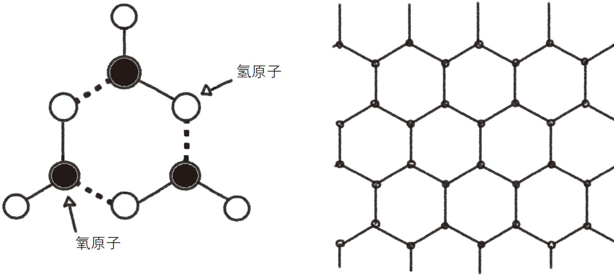
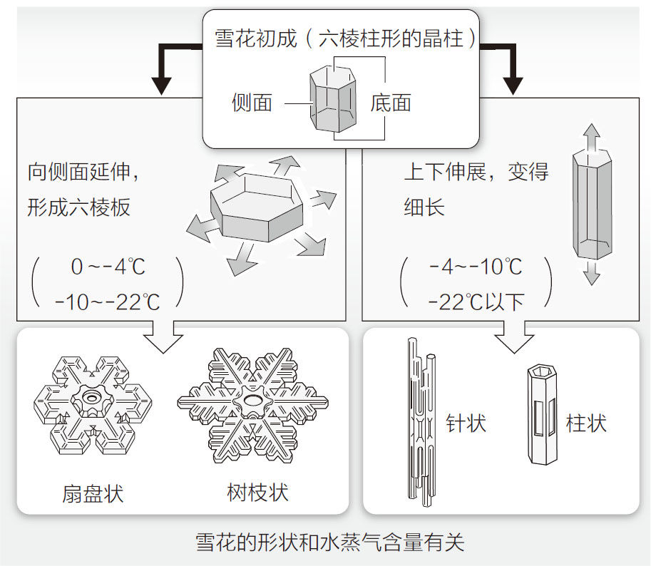
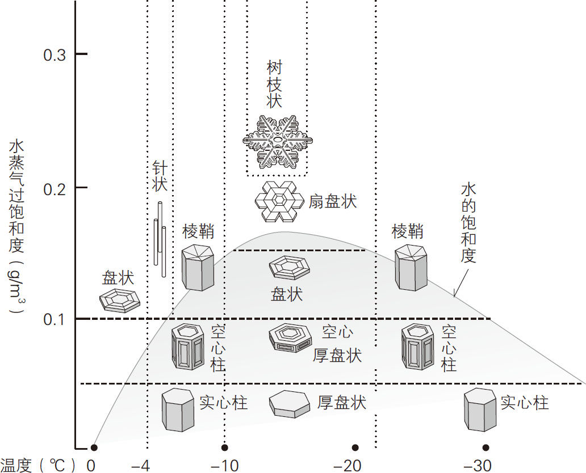

在寒冷的冬季，大家有仔细观察过从天而降的雪花吗？雪花虽然形状千变万化，各不相同，但基本形态都是六角形。为什么雪花都是六角形的？为什么没有五角形、七角形的雪花呢？
我们来了解一下为什么雪花的基本形态都是六角形。首先，雪是由水凝结而成的，而水又是由无数个水分子组成的。我们知道，水的化学式是“H2 O”，一个水分子是由一个氧原子（元素符号为O）和两个氢原子（元素符号为H）构成的，并且这两个氢原子分别位于氧原子的左下方和右下方，使水分子的整体结构看起来很像一个回旋镖，如图1-9（a）所示。
雪花是在高空形成的。当含有水蒸气的空气在上升过程中遇冷时，云中的微尘粒子可以作为晶核，让水分子在冷空气的作用下，围绕晶核一层又一层地凝结，最后形成雪花。水分子在结晶过程中，其“镖头”与“镖尾”在正负电荷之间的牵拉作用下（图中虚线部分），会逐渐形成六角形结构，如图1-9（b）所示。这种作用形式被称为氢键 。由于水分子具有能够形成六角形的性质，所以由水分子凝结成的雪花属于六方晶系 (1) 。

图1-9 水分子及雪花结构
事实上，除了雪花，冰也是由水分子构成的六方晶系 。但是为什么果汁中的冰块不是六方体而是四方体的呢？这是由于制作冰块的时候使用了四方体的模具。然而雪花不是人工制造的，也不是在模具中生成的。以空气中的尘埃为晶核凝结成的雪花，自然会成为六角形了。
雪花在形成过程中，首先会形成六棱柱形的晶柱。之后这个晶柱会不断地凝结空气中的水分子，而凝结水分子的形式大致可以分为两种：横向扩展和纵向延伸 ，最终形成各种形状的晶体，如图1-10所示。

图1-10 雪花的结晶过程
（根据《朝日新闻》2007年1月14日早报《诺诺的DO科学：为什么雪花是六边形的？》中的图改编）
我们知道，雪花的形状很大程度上取决于云层温度和水蒸气含量 。世界上第一位发现这个规律的科学家是中谷宇吉郎 教授，他是一位日本科学家，曾获得博士学位，就职于北海道大学。1932年，中谷宇吉郎在大学任教后，开始了对雪花的专项研究。他曾到过十胜岳山上的小屋，拍摄了3000多张雪花照片，之后按照形状对雪花进行了分类。现在国际上通用的结晶体分类标准就是建立在中谷宇吉郎教授当年的研究成果之上的。
中谷宇吉郎教授在拍摄雪花的过程中发现，如果气象条件发生变化，那么雪花形状也会改变 ，于是他致力于研究气象条件与雪花形状的关系。为此，他必须在实验室中人工制造雪花，而在当时，这还是无人能完成的挑战。
中谷教授想到可以将水蒸气注入玻璃试管中，让它冷却结晶。在零下50摄氏度的低温实验室中经过无数次实验，他终于在1936年3月12日成功地制造出第一片六角形的人工雪花。
之后，中谷宇吉郎教授在各种温度和水蒸气含量的条件下，进行了大量人工制造雪花的实验，终于发现了温度和水蒸气含量与雪花形状之间的关系，并制作了各种雪花形态图，如图1-11所示。这幅图被称为“中谷—小林图”。“小林”代表小林祯作教授，他是推动中谷宇吉郎教授进一步开展实验的人。大致来看，云层的水蒸气含量越高，雪花的形状就越复杂。

图1-11 以中谷—小林图为基础绘制的温度、水蒸气含量与雪花形状的关系示意图
实际上，雪花的形状远比“中谷—小林图”中提到的多得多，据说有100种以上。不同于实验室中人工制造的雪花，自然界中的雪花是在云层中飘动的。雪花在形成过程中所经历的温度和湿度变化是非常复杂且频繁的，所以自然界中的雪花形状非常多。例如，如果雪花在形成初期处于零下30摄氏度、空气比较干燥的环境，那么它的结晶会纵向延伸，而雪花在漂浮过程中遇到零下20摄氏度、空气比较湿润的环境，结晶又会横向延展，最终形成的雪花呈鼓形。
雪花是从小的六棱柱开始慢慢变大的。所以，在一片雪花中，中心附近的形态可以认为是受结晶初期云层环境影响的，而边缘的形态则是受结晶即将结束时的云层环境影响的。
既然环境影响雪花形状，那么通过分析雪花形状，是否可以得知高空的气象状况呢？ 其实，云层中的环境是湿润还是干燥，是温暖还是寒冷，都可以通过雪花形状得知。所以，中谷宇吉郎教授曾把雪花比作“来自天空的信使 ”，因为它给我们带来了高空的气象信息。
但是，为什么云层的温度和水蒸气含量会影响雪花形状呢？这个问题至今没有准确的答案。虽然科学家通过电脑分析，得知了雪花的部分组织与结构，但是还不够完整。世界各国的著名大学教授和科学家们还在夜以继日地研究这个问题，或许不久的将来会出现第二个中谷教授，为我们彻底解开这个谜题。